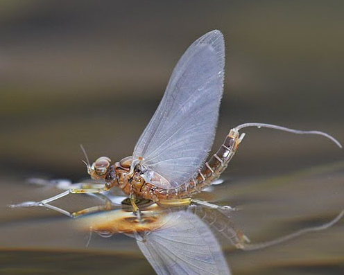

About Fly Fishing
What is it?
Fly fishing is using artificial bait to catch fish. Often times, fly fishers use hand-tied flies made of fur, feathers, and synthetic materials to imitate the look of natural bugs and fish. For beginners, it is easiest to purchase these online or in stores. Although, over time, it may become more cost effective to learn to tie them yourself.There are three main categories of flies. Dry flies, nymphs, and streamers. Dry flies are the most well- known and are flies that are meant to float on the surface of the water. They represent adult bugs. Nymphs are meant to sink and represent bugs in the beginning stages of the life cycle that still live underwater. And streamers are meant to appear like small fish.
Although nymphs and streamers can be very effective, it is simplest to start with dry flies.
Dry flies
Nymphs
Streamers

Why do it?
Fly fishing is much more involed that bait fishing. A comparison I often make is that it is like the difference in driving a manual versus an automatic car. You have a lot more control over the situation and have a lot more flexibility, but it is also more difficult.And a primary reason for me is that it can be much more successful. When fishing in high mountain lakes and rivers, fish are usually native. This means they are very accustomed to eating bugs and fish and are generally not interested in power bait. I have been on a handful of campouts with friends where I was the only one able to catch fish because I was the only one fly fishing.
How do I start?
Click on the navigation buttons on the top right of the page for information on how to get started with fly fishing.Gear Needed
Fly rod
Naturally, if you want to fly fish, you'll need a fly rod. These can be bought from a variety of places and it doesn't need to be anything special. I would recommend finding one that can be split into several parts for easier storage and transportation. This is a fine starter rod.If you buy a pre-setup kit, you won't have to deal with stringing your own reel. If you decide to buy parts individually though, you should know the basics.
The main difference with casting a fly rod is the bait is often extemely light. When you cast a normal rod, the weight carries the line. This isn't the case here. That's why fly rods have the distinctive, thick line. The line itself is the weight you cast. On the end of the floating line, you'll have two different types of monofilament. A tapered leader and tippet. The tapered leader is meant to provide a smooth diameter transition between the thick floating line and the tippet. This also aids in a smooth of energy to the fly. The tippet is the thinnest part of the line and helps to not be visible to the fish or affect the motion of the fly. And that's it. It's more complicated than what you may be used to, but there are tutorials helping you with all the knots you'll need (one will be in the examples tab).
Flies
What would fly fishing be without the flies? Like I stated on the home page, dry flies are best for beginners. You can buy flies from stores or make your own, although buying them online is usually cheaper. I get my flies from here.These are some flies that I have had great success with trout fishing.
- Parachute Adams
- Griffith's Gnat
- Mosquito
- Pale Morning Dunn
- Wolly Bugger
- Royal Coachman
- San Juan Earth Worm
- Pheasant Tail Flash Back
- Copper John
- Cripple Pale Morning Dun
- Stone Black
- Tentwing Hopper
- Black Ant
- Stimulator Yellow
In fly fishing, there is a a phrase called, "matching the hatch". This means you should be fishing with a fly that looks like the natural bugs that are alive at that time. This will depend on the time of year and where you are. This is why an assortment of flies is nice to have.
Examples